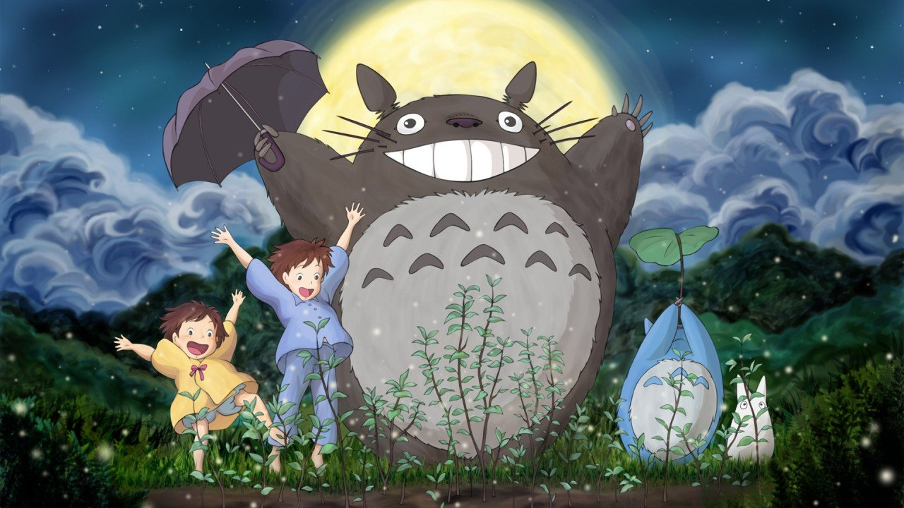
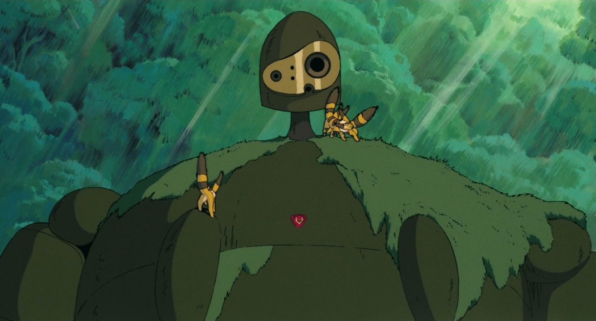
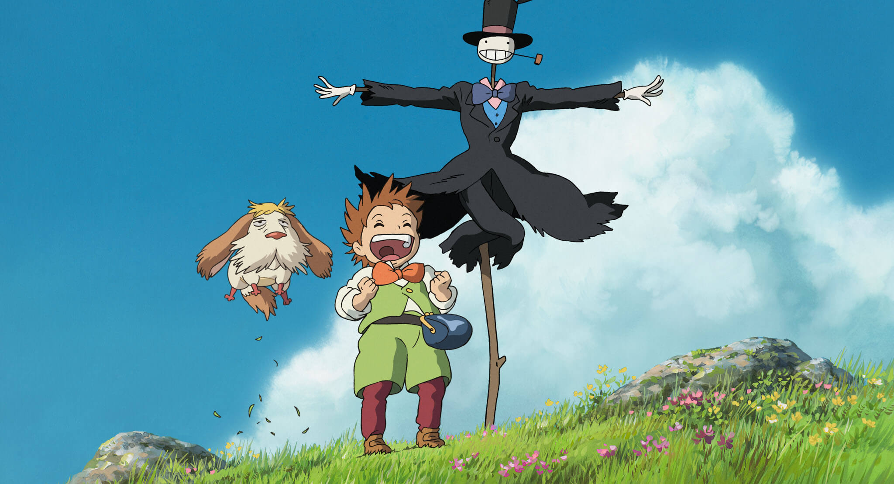
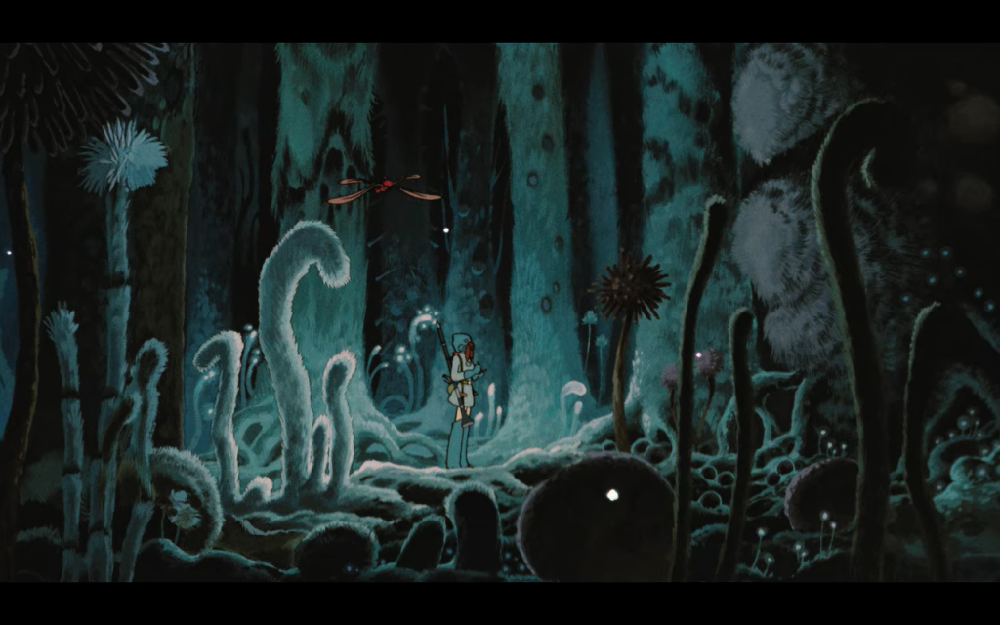
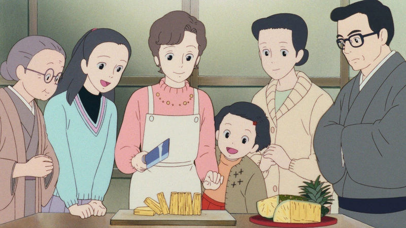

<div role="group" aria-roledescription="carousel" is="basic-carousel" class="carousel_wrapper">
    <button is="carousel-control" class="carousel_button carousel_button--control">
      <span class="fa-solid fa-pause h-6 w-6"></span>
      <span class="sr-only">Stop slide rotation</span></button>
    <button is="carousel-previous" class="carousel_button carousel_button--previous">
      <span class="fa-solid fa-chevron-left h-6 w-6"></span>
      <span class="sr-only">Previous slide</span></button>
    <button is="carousel-next" class="carousel_button carousel_button--next">
      <span class="fa-solid fa-chevron-right h-6 w-6"></span>
      <span class="sr-only">Next slide</span>
    </button>
    <div aria-atomic="false" aria-live="off" class="carousel_slide-wrapper">
        <div role="group" aria-roledescription="slide" class="carousel_slide">
            
            <div class="carousel_slide__content">
                <h3 class="carousel_slide__title">Il mio vicino Totoro</h3>
                <p>Hayao Myazaki, 1988</p>
            </div>
        </div>
        <div role="group" aria-roledescription="slide" class="carousel_slide">
            
            <div class="carousel_slide__content">
                <h3 class="carousel_slide__title">Il castello nel cielo</h3>
                <p>Hayao Myazaki, 1986</p>
            </div>
        </div>
        <div role="group" aria-roledescription="slide" class="carousel_slide">
            
            <div class="carousel_slide__content">
                <h3 class="carousel_slide__title">Il castello errante di Howl</h3>
                <p>Hayao Myazaki, 2004</p>
            </div>
        </div>
        <div role="group" aria-roledescription="slide" class="carousel_slide">
            
            <div class="carousel_slide__content">
                <h3 class="carousel_slide__title">Nausicaa della valle del vento</h3>
                <p>Hayao Myazaki, 1984</p>
            </div>
        </div>
        <div role="group" aria-roledescription="slide" class="carousel_slide">
            
            <div class="carousel_slide__content">
                <h3 class="carousel_slide__title">Pioggia di ricordi</h3>
                <p>Isao Takahata, 1991</p>
            </div>
        </div>
    </div>
</div>